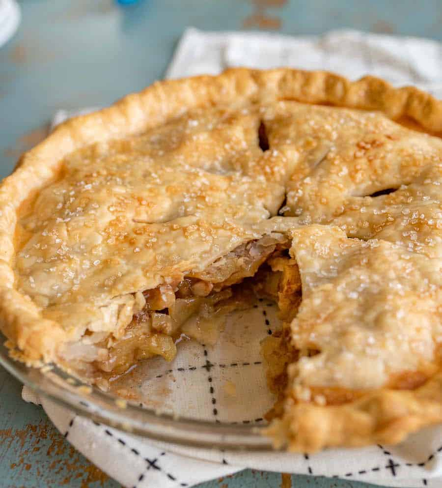

Apple Pie

Description
Ingredients
- Granulated sugar
- Thinly sliced apples
- Butter & Cinnamon
- Double pie crust
- Chubby sparkling sugar
Steps
-
Mix first 5 ingredients together in a medium
bowl.
-
Roll out and place an uncooked pie crust in
the bottom of a deep 9-inch pie plate
-
Place the apple mixture in the uncooked pie
shell. Place small pieces of butter on top of apple mixture.
-
Top with second pie crust, crimp the edges,
and then cut a few slits in the top crust to allow steam to
vent.
-
Mix the egg white and 1 tablespoon of water
together in a small bowl and then brush the top with water and
sprinkle with sugar before baking.
-
Bake at 450 for the first 15 minutes, then
reduce the heat to 350 and continue cooking for an additional
30 to 40 minutes.
-
Cool for 10 minutes before serving.